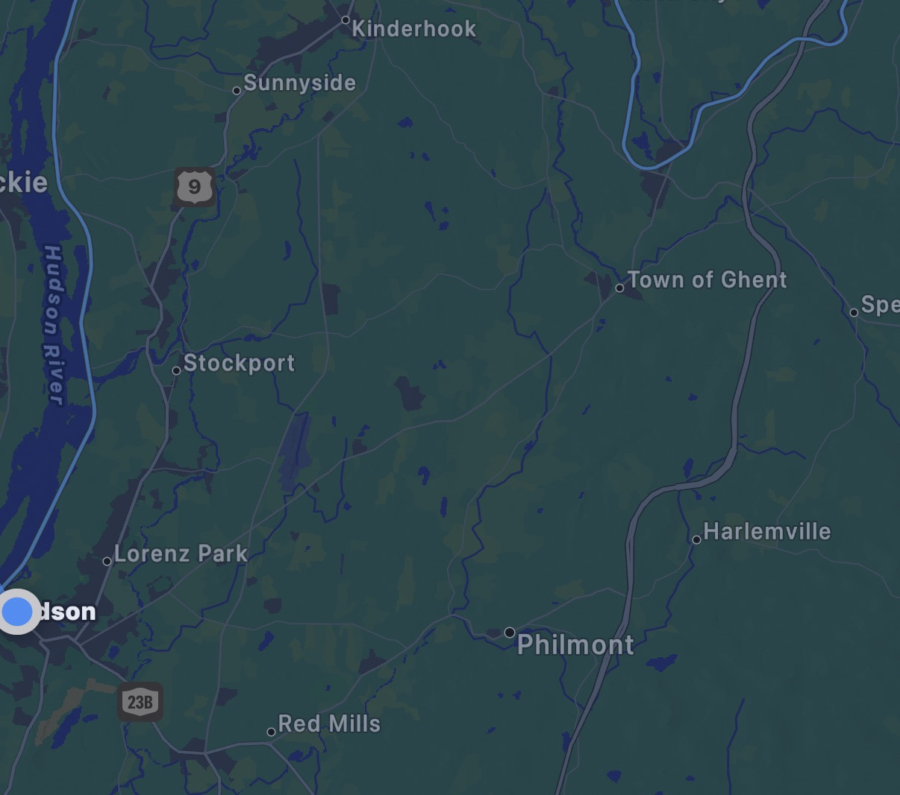
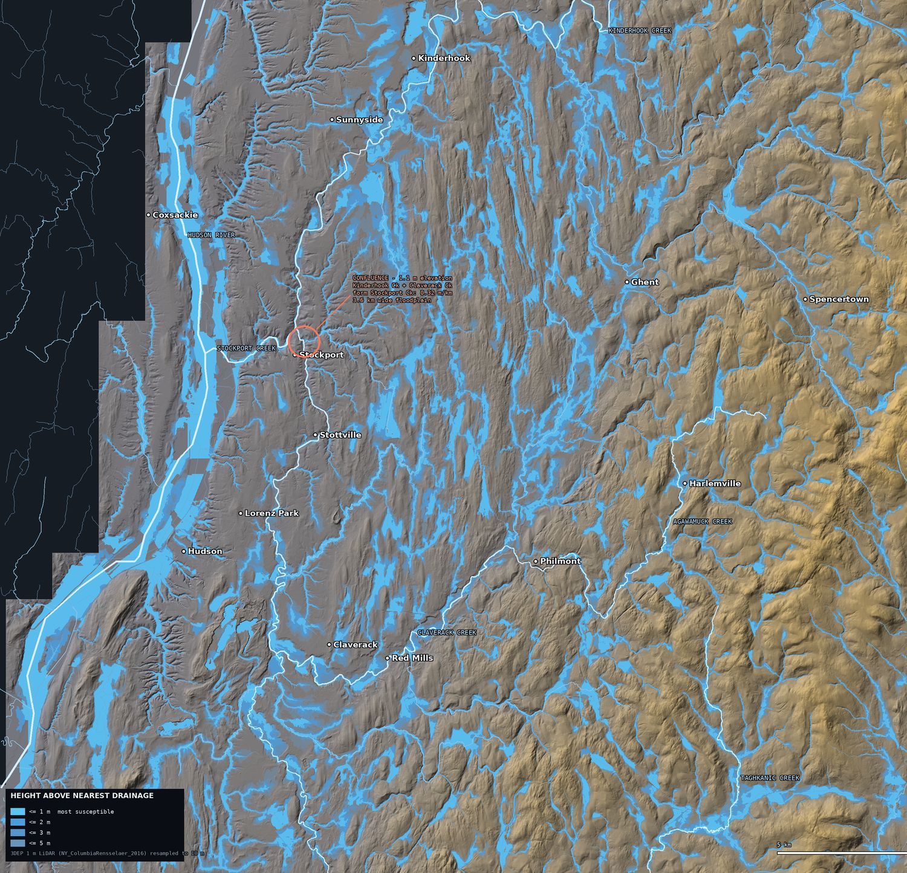
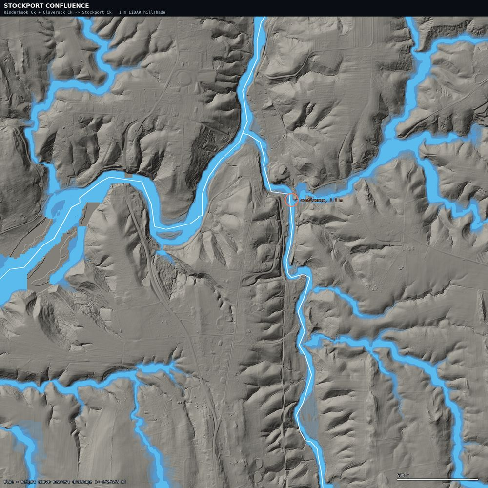
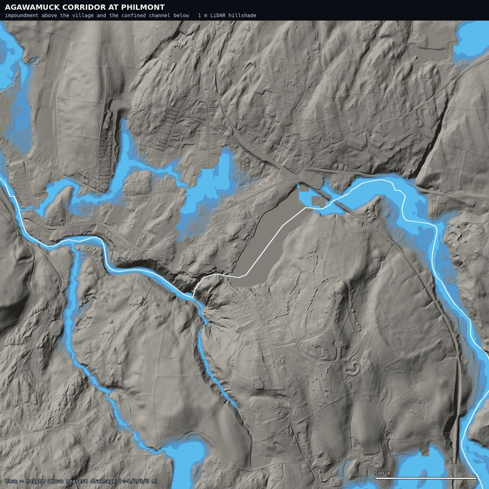

A flood-terrain analysis of Columbia County, New York, built from USGS 1-metre LiDAR. Two creeks with gradients above 5 m/km deliver into an outlet channel that falls 0.32 m/km and never rises more than 1.1 m above sea level along its entire length. That is the whole story, and it is measured rather than argued.
Area · 29.3 × 28.2 kmDEM · 3DEP 1 m → 10 mMetric · Height above nearest drainageNot · A hydraulic model
What this is — and the one thing it still is not
This is a terrain analysis. Every elevation, gradient, and flood-susceptibility figure below is computed from USGS 3DEP 1-metre LiDAR, with channels named from the National Hydrography Dataset and places located from GNIS. The pipeline is in flood/pipeline/ and the numbers in flood/data/.
It is not a hydraulic or rainfall-runoff model. Height Above Nearest Drainage tells you which ground is low relative to the water that would reach it; it does not tell you how deep, how fast, or how often. The regulatory flood layer — FEMA's NFHL — remains unreachable from this environment, so nothing here is a flood-zone determination.
Do not use this for insurance, permitting, purchase, or life-safety decisions. During an event, follow NWS Albany and county emergency management.
§ 01 / Source
It started as a screenshot.
What was supplied
One dark-mode map screenshot, 1206 × 1067 px. EXIF present, no GPS tags.
How the location was fixed
From the place names printed on it — then confirmed against GNIS coordinates, which put every label within the analysed frame.
The input was a screenshot of a regional map, with no coordinates attached. The labels were enough: Kinderhook, Sunnyside, Stockport, Lorenz Park, Hudson, Red Mills, Ghent, Philmont, Harlemville, Spencertown at the right edge, and Coxsackie clipped on the far bank. That is Columbia County, New York, with the Hudson River forming the western boundary.
Everything after this point is derived from public elevation and hydrography data for that footprint — not from the screenshot itself. The screenshot fixed where to look.

The supplied screenshot. Kept for provenance. The blue lines on it are a rendered basemap's stream layer; the analysis below uses NHD flowline geometry instead, which is georeferenced and named.
§ 02 / Terrain
The same ground, measured.
How to read the tags measured computed from the LiDAR DEM sourced published, link given inference reasoning on top of the above not obtained still unavailable
HAND
Height Above Nearest Drainage: for each cell, the vertical distance to the stream cell it drains into. Low HAND = little height between you and the water. It is the standard terrain proxy for flood susceptibility.
measured16 tiles of 3DEP 1-metre LiDAR (project NY_ColumbiaRensselaer_2016_C18) were read directly over HTTP and resampled to a 10 m grid — 2930 × 2822 cells covering 29.3 × 28.2 km, at 90.5% coverage. The missing tenth is the far west bank: the Hudson River surface and Greene County, outside the project footprint.
measuredFrom that DEM: depressions filled, flats resolved, D8 flow directions and flow accumulation computed, streams extracted at a 0.25 km² contributing-area threshold, and Height Above Nearest Drainage derived for every cell. In-frame relief is 490.8 m.
12.5%
Of analysable area within 1 m of its drainage
17.6%
Within 2 m
21.7%
Within 3 m
28.3%
Within 5 m

Height Above Nearest Drainage over 1 m LiDAR hillshade. Blue = low ground relative to its own drainage, in bands at 1, 2, 3 and 5 m. White lines are NHD flowlines; dots are GNIS place locations. The dark stepped area on the west is outside the LiDAR project, not an absence of risk. Terrain falls from the Taconic foothills in the east to the tidal Hudson in the west — so drainage runs right to left across the frame.
inferenceThe east-to-west gradient is the frame's organising structure, and it is visible in the hillshade without any interpretation: uplands generate, lowlands receive. Steep upland terrain also concentrates runoff quickly, so the interval between peak rainfall and peak creek stage is short. Short warning time is a property of this landscape, not a failure of forecasting.
§ 03 / Constriction
Two creeks arrive, and the floor runs out.
Found, not assumed
The junction below was located by scanning the flow-direction grid for cells receiving two tributaries each draining >12 km². It came out 28 m from NHD's Claverack Creek and 477 m from the head of NHD's Stockport Creek — i.e. the algorithm independently found the confluence the map names.
GNIS Stockport
42.3095, −73.7462 — about 500 m from the detected junction.
measuredChannel gradients across the frame differ by a factor of 67:
Watercourse
Gradient
Character
Agawamuck Creek
21.38 m/km
Steepest in frame — Taconic descent past Philmont
Taghkanic Creek
13.81 m/km
Upland, south-east of the frame
Kinderhook Creek
5.72 m/km
Arrives from the north-east
Claverack Creek
5.10 m/km
Arrives from the south
Stockport Creek
0.32 m/km
The combined outlet. 16–18× flatter than the two creeks feeding it.
measuredStockport Creek's entire length sits between 0.10 and 1.10 m elevation. It is not a creek that descends to the sea — it is already at sea level for all 4.09 km of it. NHD geometry puts that length at 2.54 miles, which independently matches the 2.4 miles given in published descriptions.
0.32 m/km
Stockport Ck gradient
1.1 m
Elevation at the confluence
4.09 km
Length of the outlet
67×
Gradient ratio, Agawamuck vs Stockport

The confluence at 1 m resolution. Kinderhook Creek (north) and Claverack Creek (south) arrive through narrow incised ravines, meet at the marked point at 1.1 m elevation, and continue west as a broad flat reach. The change in channel form at the junction is the constriction, visible directly in the terrain.
Why the geometry matters
A long channel gives a flood wave room to spread out and lose height. Here the length is nearly all upstream of the junction and almost none below it — and what is below has no fall left to work with. When both feeder basins peak together, which a broad regional storm guarantees, the water arrives faster than a 0.32 m/km channel at tide level can pass it on.
sourcedThe outlet is also tidal. The Hudson is an estuary as far north as the federal dam at Troy, where the mean tidal range is 4.7 ft — larger than the total fall available along Stockport Creek. inferenceSo the tide, not the channel slope, can govern whether the creek can discharge at all. A runoff peak arriving on a high tide meets a receiving level that may sit above the entire creek profile.
not obtainedQuantifying that coincidence needs gauge stage and discharge joined to tide predictions. The USGS water services were not reachable here.
§ 04 / Mechanisms
The county floods in two different ways.
Floodplain width
Area with HAND ≤ 2 m within 600 m of the channel, divided by measured channel length. Channel lines were densified to 8 m before measuring — using raw NHD vertices inflates short channels badly.
Not a clean law
Taghkanic Creek is steep and relatively wide, so gradient and width are related here but not strictly inverse.
measuredGradient and floodplain width together separate two distinct flood behaviours:
Watercourse
Gradient
FP width
Behaviour
Hudson River
tidal
590 m
Trunk floodplain; backwater control
Stockport Creek
0.32
354 m
Broad, flat, tidal — spreads
Kinderhook Creek
5.72
258 m
Transitional
Taghkanic Creek
13.81
251 m
Steep with broad upper valleys
Claverack Creek
5.10
183 m
Moderately confined
Agawamuck Creek
21.38
147 m
Steep, confined — concentrates
inferenceStockport Creek is the slow mechanism. A 354 m-wide flat corridor at tide level inundates broadly and drains slowly. The hazard is extent and duration, not velocity, and it is worst when runoff and tide coincide.
inferenceThe Agawamuck is the fast mechanism. A 147 m corridor falling 21 m every kilometre gives water nowhere to spread, so depth and velocity rise instead. The hazard is a short, violent pulse — and it is the corridor immediately below Philmont's impoundment.

Agawamuck corridor at Philmont, 1 m. The impoundment reads as grey, not blue — an impounded surface sits above the natural drainage line, which is precisely why the water it holds is stored energy. Below the outlet the channel is tightly confined.Stockport confluence, 1 m — same scale. Compare the width of the blue corridor with Philmont's. Same county, same storm, two entirely different failure modes.
sourcedPhilmont's impoundment matters beyond its terrain. NYSDEC has rated the Village-owned Summit Street Lake Dam on the Agawamuck as “Deficiently Maintained” — per reporting on the DEC assessment, there is inadequate spillway capacity during a spillway design flood event and the dam will overtop. It is one of two municipally-owned Columbia County dams in the High Hazard class. A village watershed assessment separately documents 2–5 ft of sediment infilling the reservoir — storage lost is buffering lost.
not obtainedThe dam's precise location and current condition rating are not in the elevation or hydrography datasets, and NYSDEC's dam-safety records were not reachable. Treat that rating as of the cited reporting, not as current — and note that the figure above marks the impoundment, not a surveyed dam position.
§ 05 / Places
The villages sit above their creeks.
Reading the table
Elevation and HAND are at the GNIS point. The last two columns describe a 500 m box around it — min elev shows how far the ground falls nearby, and % ≤ 2 m how much of the surroundings is low-lying.
A settlement centre can sit high while its immediate surroundings do not. Both columns matter.
measuredEvery labelled place, at its GNIS coordinate:
Place
Elev
Elev ft
HAND
Min elev ≤250 m
% ≤2 m HAND
Hudson
26.2 m
85.9
3.6 m
17.8 m
15.7%
Stottville
35.0 m
114.9
6.6 m
21.2 m
13.9%
Stockport
41.4 m
135.7
40.7 m
6.8 m
0.0%
Red Mills
52.2 m
171.1
4.1 m
47.7 m
19.0%
Lorenz Park
53.7 m
176.1
12.5 m
48.1 m
0.0%
Claverack
62.8 m
206.1
6.2 m
54.5 m
9.8%
Sunnyside
66.7 m
219.0
18.8 m
61.0 m
17.5%
Kinderhook
76.8 m
252.0
17.8 m
67.7 m
0.0%
Ghent
124.3 m
407.7
9.1 m
117.2 m
33.9%
Philmont
125.0 m
410.2
35.1 m
89.9 m
12.5%
Spencertown
209.4 m
687.1
16.8 m
191.4 m
18.8%
Harlemville
213.6 m
700.8
3.1 m
208.6 m
45.5%
Coxsackie
43.7 m
143.3
42.1 m
19.2 m
0.0%
measuredA pattern runs through this table that no amount of map-reading would have produced. Stockport sits 41.4 m up with ground falling to 6.8 m within 250 m — the hamlet is on a bluff, roughly 35 m above the confluence floodplain. Philmont sits at 125 m with ground falling to 89.9 m nearby; that 89.9 m figure is about 295 ft, closely matching the published 280 ft low point at Agawamuck Creek.
inferenceThese settlements were sited above their water. The exposure in this landscape is not principally in the village centres — it is in the low ground between them, along the corridors, and at the road crossings that have to get through those corridors.
measuredTwo places invert the naive expectation. Harlemville, highest but one in the table at 700 ft, has the lowest HAND of any settlement here — 3.1 m — with 45.5% of its surroundings within 2 m of drainage: a village in a headwater valley floor. Ghent is similar at 33.9%. Absolute elevation says almost nothing about flood exposure; relative elevation says nearly everything.
The one number to keep
Hudson: centre at 85.9 ft with ground falling to 17.8 m nearby and 15.7% of its surroundings within 2 m of drainage. It is the densest older building stock in the county sitting next to the widest floodplain in the frame — high centre, exposed edges.
§ 06 / Precedent
It happened while this was being written.
Why anchor on one storm
A dated event with recorded totals fixes what “heavy rainfall” means for this terrain, at a place inside the frame.
Correction
An earlier version of this page dated this event to late July 2025. That was wrong — it is 29–30 July 2026. See § 08.
sourcedColumbia County declared a State of Emergency effective 10:00 am on Wednesday 29 July 2026, running until 7:00 am Thursday, citing excessive rainfall with “flooding of local, county and state roadways… in many areas” and warning that it would worsen — “especially in areas along the Hudson River and the west side of the county.” Between 4 and 9 inches fell across the region, and states of emergency were declared across several Capital Region communities.
The county named the west side first
“Especially in areas along the Hudson River and the west side of the county” is, independently, where § 02's Height Above Nearest Drainage puts the low ground — the Hudson corridor carries the widest floodplain in the frame at 590 m. The emergency declaration and the terrain analysis point at the same place.
8.31 in
Kinderhook — inside this frame
9.22 in
Schodack — regional max
29 Jul
County state of emergency, 10:00 am
2011
Last comparable — Irene
sourcedKinderhook recorded 8.31 inches and Schodack, just north, 9.22 in — more than twice the area's normal whole-month July rainfall, and described as rainfall unlike anything since Tropical Storm Irene (2011). Reporting has Kinderhook Creek over its banks, flooding Routes 9, 9H and County Route 21.
inferenceKinderhook Creek overtopping is the § 03 mechanism in its opening move: a 5.72 m/km channel delivering into a 0.32 m/km outlet that has no fall left to give. The creek spills upstream of the constriction before the constriction itself is the visible problem.
inferenceThe reported damage pattern — roads across many areas, not one failure point — is what the terrain predicts. Exposure here is distributed along corridors rather than concentrated at a single site, and road crossings are where a corridor at capacity first becomes someone's problem.
sourcedFor baseline frequency, commercial risk aggregators count 10 federal disaster declarations in the county since 2000 and about 16.1% of properties in FEMA flood zones (ADRI; see also First Street). These remain aggregator figures, not FEMA determinations. That 16.1% of properties sits near this analysis's 17.6% of area within 2 m HAND — but they measure different things, and the resemblance is not corroboration.
§ 07 / Discharge
The terrain predicted the shape of it.
A third kind of number modelled comes from the National Water Model — not LiDAR, and not an observation. NWM assimilates USGS gauges, so it is anchored to reality, but it remains model output and is tagged separately for that reason.
Why the lines stop
The record ends at 30 July 00z because later hourly files had not been published when this ran. The event was still building.
modelled§ 04 argued from terrain alone that this county floods two ways: Stockport Creek spreads — flat, wide, slow — while the Agawamuck concentrates — steep, narrow, fast. Discharge through the 29–30 July 2026 storm separates exactly along that line.
Stockport CkKinderhook CkClaverack CkAgawamuck Ck
Modelled discharge, 26–30 July 2026. Logarithmic vertical axis — the reaches differ by three orders of magnitude, and a linear axis would flatten the Agawamuck to nothing. Hover for values at any hour.
70×
Stockport Ck rise in 24 h
346×
Agawamuck rise — steepest creek
94%
Outlet flow vs sum of its two feeders
1.3×
Hudson River rise — barely responds
Reach
Base m³/s
Peak m³/s
Rise
Peak (UTC)
At end of record
Stockport Ck
4.57
319.6
70×
07-30 00:00
still rising
Kinderhook Ck
3.17
190.0
60×
07-30 00:00
still rising
Claverack Ck
1.38
149.1
108×
07-30 00:00
still rising
Agawamuck Ck
0.13
45.0
346×
07-29 21:00
peaked, falling
Taghkanic Ck
0.64
20.6
32×
07-30 00:00
still rising
Hudson River
117.43
151.9
1×
07-30 00:00
still rising
The Agawamuck is the only reach that turned
modelledIt rose 346× — the largest relative response of any reach — peaked at 29 July 21z, and was already falling three hours later while every other reach was still climbing. A 147 m corridor at 21.38 m/km fills and empties fast. That is the flashy mechanism, caught in the act.
modelledStockport Creek did the opposite: 4.57 → 319.59 m³/s, monotonic, no peak in the record at all. A 354 m corridor at 0.32 m/km has nowhere to shed water to.
The constriction, visible in arithmetic
At the last timestep Kinderhook carried 190.0 m³/s and Claverack 149.1 — 339.1 between them. Stockport Creek, immediately below their junction, carried 319.6. The missing 6% is water the flat reach had not passed on yet. The pinch point is not a metaphor; it shows up as a mass-balance deficit.
Is it Irene-class? Not on this evidence
sourcedCoverage described the rainfall as unlike anything since Tropical Storm Irene. modelledThe same model run over six historical floods puts that in perspective at Stockport Creek:
Peak modelled discharge at Stockport Creek. Retrospective values from the NWM v3.0 reanalysis (1979–2023); the 2026 bar is analysis_assim and is a floor, not a peak — the series was still rising when the data ran out.
inferenceIrene reached 2,021 m³/s here — 6.3× the highest 2026 value available. So the rainfall comparison and the discharge comparison are not the same claim, and both can be true: an Irene-class rainfall on dry late-July ground produces far less runoff than Irene's rain did on catchments already saturated in late August. Antecedent wetness, not rainfall depth alone, sets the discharge.
not obtainedWhere the 2026 peak actually landed. The published record stopped mid-event; a later run would settle it, and it may well climb several bars up that chart.
How high is that? Enough to meet the tide
inferenceDischarge can be turned into stage with a synthetic rating curve — wetted area and perimeter read off the HAND surface, then Manning's equation. Run across roughness values n = 0.035 / 0.05 / 0.08, that gives:
Reach
Discharge
Implied stage
Local valley depth (median HAND)
Stockport Ck
320 m³/s
1.5 – 2.3 m
9.1 m
Kinderhook Ck
190 m³/s
1.0 – 1.5 m
8.0 m
Claverack Ck
149 m³/s
1.1 – 1.6 m
9.9 m
Agawamuck Ck
45 m³/s
0.4 – 0.7 m
16.8 m
inferenceEvery value sits far below its valley depth, so nothing here is physically absurd. But look at the Stockport number against § 03's tidal figure: an implied flood stage of 1.5–2.3 m against a mean tidal range of 4.7 ft ≈ 1.4 m. The tide is the same order of magnitude as the flood.
Why there is no inundation map on this page
That comparison is also the reason to stop here. Manning's equation assumes gravity-driven uniform flow, and at 0.32 m/km with a tidal boundary contributing a stage swing comparable to the flood itself, the downstream boundary — not the channel slope — governs. The arithmetic returns plausible numbers for the wrong physics. Mapping an extent from it would dress that up as spatial authority it has not earned, so the stage estimates are reported and the map is not drawn.
What modelled does not mean
These are National Water Model values, not gauge readings. NWM is a 1 km land-surface model: it assimilates gauge data, but it also smooths intense local convective rainfall, which is exactly the kind that produces flash flooding. Treat the shapes and the ratios as the finding, not the absolute magnitudes.
§ 08 / Corrections
What the data overturned.
Why keep this section
An earlier version of this page was inference-only, because a first pass at the data sources concluded none were reachable. That conclusion was wrong. Recording what the measurements changed is more useful than quietly replacing the text.
01 / Availability
“No DEM, no LiDAR” was simply wrong
The first pass tested six elevation APIs — USGS EPQS, FEMA NFHL, OpenTopography, Open-Elevation, Nominatim, USGS water services — found all six blocked, and generalised that into a claim that no elevation data was obtainable.
Bulk and tiled sources were never tried. 3DEP 1 m LiDAR covering this exact county, the NHD, and GNIS are all served from prd-tnm.s3.amazonaws.com, which was reachable the whole time. The blocked-API table was accurate; the conclusion drawn from it was not.
02 / Lorenz Park
Lorenz Park is not low riverfront ground
The earlier version grouped Lorenz Park with Hudson as exposed low ground near the river. Measured: 53.7 m (176 ft), HAND 12.5 m, and 0.0% of its surroundings within 2 m of drainage. It sits well up. The claim was wrong and is withdrawn.
03 / Siting
The villages are above their creeks, not in them
The inference-only version implied settlements sat in the floodplain. The pattern is the opposite: Stockport 35 m above its confluence, Philmont 35 m above the Agawamuck. Exposure lives in the corridors between the villages.
04 / Arithmetic
A floodplain width of 3,612 m was an artifact
An intermediate calculation divided floodplain area by raw NHD vertex count rather than measured channel length. For short channels with sparse vertices that inflates wildly — it put Stockport Creek's floodplain at 3,612 m. Densifying the channel lines to 8 m spacing gives 354 m. The 1 m hillshade is what exposed it: the terrain plainly showed an incised channel, not a 3.6 km-wide plain.
05 / Date
The precedent storm was dated to the wrong year
§ 06 originally placed the flood in late July 2025, hedging that the specific day was unconfirmed. It is 29–30 July 2026 — Columbia County's State of Emergency took effect at 10:00 am on Wednesday 29 July 2026. The error came from reading dates out of search-result summaries instead of a primary source.
It was caught by the data, not by re-reading: modelled discharge across 18 July – 7 August 2025 at all six reaches showed no flood signal whatsoever — Stockport Creek peaked at 7.80 m³/s against a 4.8–5.8 baseline. A state-of-emergency flood cannot be invisible in the discharge record of the basin it flooded, so the window had to be wrong.
06 / Datum
A single “channel level” datum failed on a steep creek
A first attempt at the detail insets shaded ground within a few metres of one fixed channel elevation per window. On the Agawamuck, which drops from 154 m to 71 m inside a single 3 km window, that datum is meaningless — it shaded the downstream valley floor and I briefly read it as an impoundment. Both insets now use the routed HAND surface instead.
§ 09 / Method
How to check this.
Everything is committed pipeline/ — the four scripts, in order data/ — every number quoted here, as JSON figures/ — the rendered maps
All inputs are public. Nothing here needs credentials.
Pipeline
# all inputs are public; no credentials needed
pip install rasterio numpy scipy pysheds fiona pillow netCDF4 numcodecs
python3 pipeline/01-build-dem.py # 3DEP 1 m -> 10 m mosaic (windowed HTTP reads)
python3 pipeline/02-fetch-vectors.py # NHD flowlines + GNIS place names
python3 pipeline/03-hydrology.py # fill -> D8 -> accumulation -> HAND
python3 pipeline/04-render-region.py # regional figure
python3 pipeline/05-render-insets.py # 1 m detail insets
python3 pipeline/06-nwm-discharge.py # reach matching + NWM discharge
measuredThe 1 m tiles are internally tiled with overviews, so GDAL's /vsicurl driver reads only the byte ranges needed. Building the whole 10 m mosaic took 11 seconds and tens of megabytes, against roughly 2 GB for the full tiles.
What limits the result
Limit
Consequence
HAND is not inundation
It ranks ground by height above its drainage. No depth, no velocity, no return period, no rainfall-runoff or hydraulic routing anywhere in this analysis.
Accumulation is frame-truncated
Max in-frame contributing area is 111.8 km². Kinderhook Creek's real watershed reaches into Massachusetts, so in-frame accumulation understates discharge for anything entering at an edge.
LiDAR is a 2016 surface
Returns over open water are unreliable; channel beds are not bathymetry. Nine years of channel change and development are not captured.
90.5% coverage
The west bank — Hudson River surface and Greene County — is outside the project. Dark on the map means unmeasured, not safe.
10 m analysis grid
HAND is computed at 10 m. The insets show 1 m hillshade under a 10 m HAND surface, so the blue edges are coarser than the relief beneath them.
0.18% artifacts removed
Cells draining into the nodata region returned impossible HAND values against the nodata sentinel; anything above the 490.8 m in-frame relief was discarded.
No FEMA layer
The regulatory NFHL was unreachable. Nothing here is a flood-zone determination.
Discharge is modelled
NWM is a 1 km land-surface model. It assimilates USGS gauges, but it smooths intense local convective rainfall — the kind that drives flash flooding. Observed gauge series remain unreachable, so nothing here is a measured flow.
Event record incomplete
The 2026 hydrograph stops at 30 July 00z because later files were unpublished. Every 2026 peak in § 07 is a lower bound.
No FEMA layer — and it was chased
Beyond hazards.fema.gov: every Esri host (arcgis.com, services*.arcgis.com, services.arcgisonline.com, fema.maps.arcgis.com), New York's own GIS servers (gisservices.dhses.ny.gov, opdgig.dos.ny.gov), and msc.fema.gov were all refused. No NFHL mirror exists on public S3, and NOAA's HAND-based FIM bucket answers 403 on every key. The regulatory layer is unobtainable here, not merely skipped.
Where to get the authoritative answer
FEMA Flood Map Service Center — the regulatory determination, searchable by address. Start here for any decision that matters.
NWS Albany — watches, warnings and totals during an event.
Standing caveat
This analysis measures terrain. It does not tell you whether a given property floods. Only the regulatory hazard layer and a surveyed elevation certificate can do that.